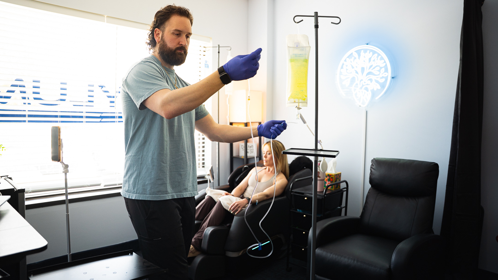
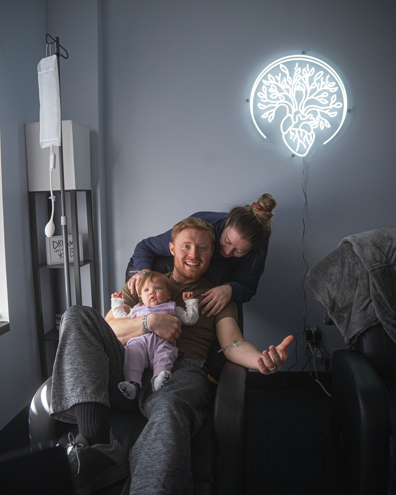

NAD+ Therapy
Popular for cellular support, energy, and recovery through NAD+ infusions and injections.
Learn more →
IV Therapy & Hydration
Hydration, energy, immune, recovery, and NAD+ formulas delivered straight where your body can use them, with medical oversight. Voorhees and Cherry Hill, NJ.

Most popular front doorAsylum Wellness & IV
Intravenous therapy delivers fluids, vitamins, minerals, and antioxidants directly into your bloodstream for near-complete absorption. The result is faster, fuller hydration and nutrient delivery.
Every drip is reviewed for safety and matched to what you actually need.
Go deeper
Popular for cellular support, energy, and recovery through NAD+ infusions and injections.
Learn more →B12, glutathione, MIC, and vitamin D shots for a quick boost you can fit into a lunch break.
Learn more →Pair your drips with bloodwork so you are dosing real deficiencies, not guesses.
Learn more →
How it works
Most visits take 30 to 60 minutes in a comfortable recovery chair. We review your goals and health history, place a small IV, and let the drip do its work while you relax, read, or take a call. NAD+ infusions run a little longer for comfort.
Questions
IV therapy delivers fluids, vitamins, and nutrients directly into the bloodstream for hydration support and nutrient replenishment. It is provider-guided and personalized to what you are looking to support, whether that is hydration, recovery, immune support, or general wellness.
We offer a wide range of IV infusions tailored to different wellness goals. You can view our full menu above; on average, infusions range from about $150 to $250.
Yes. Add-on availability depends on the infusion you are receiving, and our team will walk you through your options during your visit.
Sessions typically run 30 to 90 minutes, depending on the infusion you are receiving.
Yes. New clients complete basic consent forms and, depending on the service, a brief clearance exam with one of our medical professionals before treatment.
No. Asylum operates on a 100% cash-pay basis; insurance is not accepted for any service.
We typically recommend IV therapy at least once a month, though some clients come in as often as weekly. The right frequency depends on your goals, current health status, and guidance from our medical team.
IV therapy is not the right fit for everyone. During your screening, our medical team reviews your health history to flag anything, including certain heart, kidney, or pregnancy-related considerations, that would make IV therapy inappropriate for you.
Book an IV drip or ask our team which formula fits your goals.